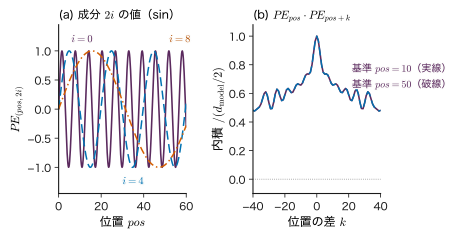
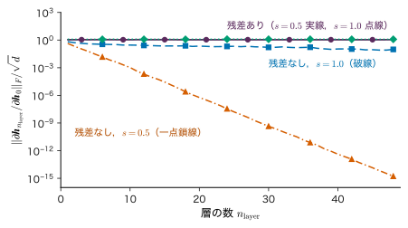
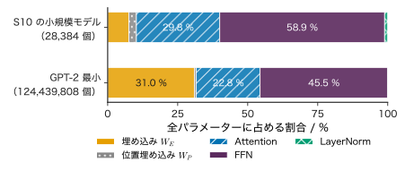
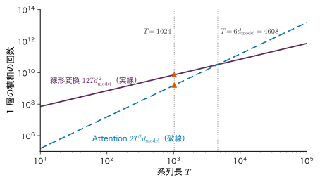

第25章Transformer の構造 — Attention を積み重ねる
- Attention は「重み付き平均」を 1 回とるだけの操作である．それだけで，どうやって文の意味をとらえ，次のトークンの確率を出すモデルを組み立てるのか．
- 「金属 の 例 に は」の 6 トークンを入れたとき，モデルの中を流れる行列はそれぞれ何行何列で，パラメーターはどこに何個あるのか．
- Attention は並べ替えても同じ答えを返す（並べ替え同変）．それなのに，なぜ Transformer は語順を区別できるのか．
前章の Attention は，系列の各位置が「どの位置の情報をどれだけ取り込むか」を計算する仕組みだった．しかし Attention を 1 回かけただけでは，できることは少ない．行うのは Value の重み付き平均だけで，非線形な変換もなければ，語順の情報もない．Transformer は，この Attention に，位置の情報，位置ごとの小さなニューラルネットワーク（FFN），残差接続，LayerNorm を組み合わせた「ブロック」を作り，同じ形のブロックを何段も積み重ねたモデルである．どのブロックも $T\times d_{\mathrm{model}}$ の行列を受け取って同じ形の行列を返すので，いくらでも積み重ねられる．
たとえば，この教材のために学習した小さなモデル（シミュレーター S10 の②）は，語彙 67 語，ブロック 2 段，ベクトルの次元 32 で，パラメーターは 28,384 個である．同じ数え方で GPT-2 の最小の公開モデルを数えると 124,439,808 個になる．桁は 4 つ違うが，部品と配線は同じである．本章では，全体像（原論文の encoder–decoder），トークン埋め込みと位置の情報，Transformer ブロック（post-LN と pre-LN），位置ごとの FFN，残差接続と LayerNorm，encoder と decoder の役割の違い，GPT 型（decoder のみ）の流れ，行列の形とパラメーター数の数え方，計算量を順に組み立てる．
- Transformer ブロックの部品（self-attention，FFN，残差接続，LayerNorm）の役割と，post-LN・pre-LN の違いを図と式で説明できる．
- 正弦波の位置符号を手で計算し，ずらした位置の符号が回転で表せること，内積が位置の差だけで決まることを導ける．
- LayerNorm を小さなベクトルで手計算し，バッチ正規化との違い（どの軸で平均をとるか）を説明できる．
- 残差接続が勾配の通り道になる理由を，Jacobi（ヤコビ）行列 $\bm{I}+\partial F/\partial\bm{x}$ の形から説明できる．
- GPT 型のモデルについて，トークン ID から次のトークンの確率までの全部の行列の形とパラメーター数を表にでき，GPT-2 の最小モデルのパラメーター数を自分で数えられる．
- 計算量が $T$ の 1 乗の部分と 2 乗の部分に分かれることを示し，文脈長の制約を説明できる．
入門ルートで読む節：25.1，25.2，25.3，25.4，25.5，25.7，25.8，25.12．「詳しいルート」の印が付いた節は，初めて読むときは飛ばしてよい．
25.1 全体像 — 同じブロックを積み重ねる
25.1.1 何をしたいのか
第23章の encoder–decoder（seq2seq）は，RNN で入力の系列を読み，別の RNN で出力の系列を 1 トークンずつ書いた．第24章で見たように，RNN には (1) 入力全体を固定長のベクトルに押し込む，(2) 位置の順にしか計算できない，(3) 遠い位置どうしの経路が長い，という弱点があった．Vaswani らが 2017 年に提案した Transformer は，再帰をやめ，系列の全位置を Attention で一度に結ぶことで，この 3 つを同時に解消した．原論文の題 "Attention Is All You Need" はこの点を指している．
Transformer の構造は，2 つの考え方でほぼ説明できる．
- 形を変えないブロック：1 つのブロックは $T$ 行 $d_{\mathrm{model}}$ 列の行列（$T$ 個の位置それぞれに $d_{\mathrm{model}}$ 次元のベクトル）を受け取り，同じ形の行列を返す．中では，位置どうしの情報を混ぜる self-attention と，各位置のベクトルを個別に変換する FFN を交互に使う．
- 同じ形のブロックの繰り返し：形が変わらないので，ブロックを $n_{\mathrm{layer}}$ 段つなげられる．段ごとにパラメーターは別であるが，構造は同じである．
原論文のモデル（図25.1）は機械翻訳のためのもので，入力文を読む encoder（エンコーダー：符号化器）と，出力文を書く decoder（デコーダー：復号器）からなる．encoder のブロックは「self-attention → FFN」，decoder のブロックは「causal mask つきの self-attention → cross-attention（encoder の出力を見る）→ FFN」である．GPT は，このうち decoder から cross-attention を除いたものだけを積み重ねる（25.7 節）．
25.1.2 記号と行列の向き
記号：系列を行に並べる（第24章と同じ）
第24章から第26章では，原論文に合わせて系列を行に並べる．長さ $T$ の系列を $\bm{X}\in\R^{T\times d_{\mathrm{model}}}$ と書き，その第 $t$ 行 $\bm{x}_t\in\R^{1\times d_{\mathrm{model}}}$（行ベクトル）が位置 $t$ のベクトルである．線形変換は右から掛ける（$\bm{X}\bm{W}$）．第14章の列ベクトルの書き方 $\bm{W}\bm{x}$ とは転置の関係にあり，$\bm{x}\bm{W}=(\bm{W}^{\tp}\bm{x}^{\tp})^{\tp}$ である．
本章で使う大きさの記号：ベクトルの次元 $d_{\mathrm{model}}$，ヘッド数 $n_{\mathrm{head}}$，1 ヘッドの Key・Query の次元 $d_k=d_{\mathrm{model}}/n_{\mathrm{head}}$（Value も $d_v=d_k$ とする），FFN の中間の次元 $d_{\mathrm{ff}}$，ブロックの段数 $n_{\mathrm{layer}}$（原論文の $N$），語彙サイズ $V_{\mathrm{voc}}$，文脈長（入れられるトークン数の上限）$T_{\max}$．$\bm{K}$ は本章では Key の行列であり，第10・12章の Gram 行列ではない．
第24章の multi-head attention を，本章で使う形で再掲する（導出と数値例は第24章）．入力 $\bm{X}\in\R^{T\times d_{\mathrm{model}}}$ のヘッド $j$（$j=1,\dots,n_{\mathrm{head}}$）について，$\bm{Q}_j=\bm{X}\bm{W}_Q^{(j)}$，$\bm{K}_j=\bm{X}\bm{W}_K^{(j)}$，$\bm{V}_j=\bm{X}\bm{W}_V^{(j)}$（いずれも $T\times d_k$，$\bm{W}^{(j)}_{\cdot}\in\R^{d_{\mathrm{model}}\times d_k}$）として
\begin{equation} \bm{Z}_j=\softmax\!\left(\frac{\bm{Q}_j\bm{K}_j^{\tp}}{\sqrt{d_k}}+\bm{M}\right)\bm{V}_j \label{eq:25-head} \end{equation} \begin{equation} \mathrm{MHA}(\bm{X})=\bigl[\bm{Z}_1\ \cdots\ \bm{Z}_{n_{\mathrm{head}}}\bigr]\,\bm{W}_O \label{eq:25-mha} \end{equation}である（$\bm{Z}_j\in\R^{T\times d_k}$，$\mathrm{MHA}(\bm{X})\in\R^{T\times d_{\mathrm{model}}}$）．softmax は各行（各 Query）について Key の方向にとる．$[\ \cdots\ ]$ は横に並べる連結で $T\times d_{\mathrm{model}}$ になり，$\bm{W}_O\in\R^{d_{\mathrm{model}}\times d_{\mathrm{model}}}$ を掛けて元の幅に戻す．$\bm{M}$ は causal mask（$M_{ij}=0\ (j\le i)$，$M_{ij}=-\infty\ (j\gt i)$）で，mask をかけないときは $\bm{M}=\bm{0}$ とする．実装では各射影にバイアス（長さ $d_k$ や $d_{\mathrm{model}}$ の行ベクトル）を足すことが多い（GPT-2 も本書のシミュレーターも足している）．MHA の出力の形 $T\times d_{\mathrm{model}}$ は入力と同じであり，これが 25.3 節で残差接続を足せる理由である．
例題25.1 原論文のモデルにある Attention の数と重み行列の形
原論文の base モデルは $N=6$，$d_{\mathrm{model}}=512$，$n_{\mathrm{head}}=8$ である．(1) encoder と decoder を合わせて，Attention の部品（multi-head attention 1 つを 1 個と数える）はいくつあるか．(2) 入力文が $T_{\mathrm{enc}}=10$ トークン，出力側がいま $T_{\mathrm{dec}}=7$ トークンのとき，encoder の self-attention，decoder の self-attention，cross-attention の重み行列（softmax の後の行列）は，1 ヘッドあたり何行何列か．(3) 1 ヘッドの $d_k$ はいくつか．
解答 (1) encoder の各段に self-attention が 1 個で $6\times1=6$ 個．decoder の各段に self-attention と cross-attention が 1 個ずつで $6\times2=12$ 個．合わせて $6+12=18$ 個である．
(2) 重み行列は「Query の数 × Key の数」である．encoder の self-attention は Query も Key も入力文の位置なので $10\times10$．decoder の self-attention は出力側の位置どうしで $7\times7$（causal mask のため右上の成分は 0）．cross-attention は Query が decoder の 7 位置，Key が encoder の 10 位置なので $7\times10$ である．どれも 8 ヘッドぶんある．
(3) $d_k=d_{\mathrm{model}}/n_{\mathrm{head}}=512/8=64$．
25.2 トークン埋め込みと位置の情報
25.2.1 トークン埋め込み — 行列の行を取り出す
Transformer の入力は，トークン ID の列 $x_1,\dots,x_T$（各 $x_t\in\{1,\dots,V_{\mathrm{voc}}\}$ の整数）である．トークンが何であるか（単語，サブワード，文字など）は第26章で扱う．ID はただの番号で，大小に意味はない．そこで，第23章と同じく埋め込み行列 $\bm{W}_E\in\R^{V_{\mathrm{voc}}\times d_{\mathrm{model}}}$ を用意し，ID が $x_t$ のトークンを $\bm{W}_E$ の第 $x_t$ 行で表す．$x_t$ の one-hot ベクトルを $\bm{e}_{x_t}\in\{0,1\}^{1\times V_{\mathrm{voc}}}$（第 $x_t$ 成分だけ 1 の行ベクトル）と書くと
\begin{equation} \bm{e}_{x_t}\bm{W}_E=(\bm{W}_E\ \text{の第}\ x_t\ \text{行}) \label{eq:25-embed} \end{equation}である．one-hot との積は「行を 1 本取り出す」ことと同じなので，実装では掛け算をせず添字で引く．$\bm{W}_E$ は学習するパラメーターであり，似た使われ方をするトークンほど近いベクトルになるように学ばれる．
25.2.2 なぜ位置の情報を足すのか
第24章 24.8 節で示したとおり，self-attention は入力の行を並べ替えると出力の行も同じように並べ替わる（並べ替え同変．第24章の置換同変性）．後で見るように FFN・残差接続・LayerNorm も各行に同じ操作をするだけなので，ブロック全体も並べ替え同変である（例題25.12）．すると，「鉄 は 銅 より 重い」と「銅 は 鉄 より 重い」は，同じトークンの集まりとして区別できない．語順を区別するには，位置 $t$ に固有のベクトルを各位置の埋め込みに足して，同じトークンでも位置が違えば違う入力になるようにする．
定義25.1 Transformer の入力
位置 $t$（$t=1,\dots,T$，$T\le T_{\max}$）の入力ベクトルを，トークン埋め込みと位置のベクトルの和とする．
\begin{equation} \bm{x}^{(0)}_t=\bm{e}_{x_t}\bm{W}_E+\bm{p}_t \label{eq:25-input} \end{equation}これを $t=1,\dots,T$ の順に行に並べた行列を $\bm{X}^{(0)}\in\R^{T\times d_{\mathrm{model}}}$ と書く．$\bm{p}_t\in\R^{1\times d_{\mathrm{model}}}$ の作り方には，式を決めておく位置符号（positional encoding）と，学習する位置埋め込み（position embedding）$\bm{W}_P\in\R^{T_{\max}\times d_{\mathrm{model}}}$ の第 $t$ 行を使う方法がある．
25.2.3 正弦波の位置符号
原論文は，位置 $pos=0,1,2,\dots$（0 から数える）と成分の番号について，次の式で位置符号を決めた．$i=0,1,\dots,d_{\mathrm{model}}/2-1$ として，偶数番目の成分 $2i$ と奇数番目の成分 $2i+1$（成分も 0 から数える）を
\begin{align} PE_{(pos,\,2i)}&=\sin\bigl(\omega_i\,pos\bigr), \label{eq:25-pe-sin}\\ PE_{(pos,\,2i+1)}&=\cos\bigl(\omega_i\,pos\bigr), \label{eq:25-pe-cos} \end{align}とする．ここで角振動数は
\begin{equation} \omega_i=\frac{1}{10000^{2i/d_{\mathrm{model}}}} \label{eq:25-pe-omega} \end{equation}である．原論文の書き方 $\sin(pos/10000^{2i/d_{\mathrm{model}}})$ と同じものである．本書の位置 $t$ は 1 から数えるので，$\bm{p}_t$ は $pos=t-1$ の符号である．各成分の組 $(2i,2i+1)$ は，角振動数 $\omega_i$ で回る単位円上の点 $(\sin\omega_i pos,\ \cos\omega_i pos)$ である．$i=0$ では $\omega_0=1$（周期 $2\pi\approx6.3$ 位置）と速く回り，$i$ が大きいほど遅くなって，最後の組では周期が $2\pi\cdot10000^{(d_{\mathrm{model}}-2)/d_{\mathrm{model}}}$（$d_{\mathrm{model}}=512$ なら約 $6.06\times10^{4}$ 位置）になる．時計の秒針・分針・時針のように，速さの違う針の組で位置を表していると考えればよい（図25.2(a)）．

この形には 2 つの良い性質がある．どちらも三角関数の加法定理だけから導ける．
定理25.1 正弦波の位置符号の性質
(1) ずらしは回転：どの $pos$ についても，位置を $k$ だけずらした符号は，$pos$ によらない行列 $\bm{R}_k$ を使って $\bm{PE}_{pos+k}=\bm{PE}_{pos}\bm{R}_k$ と書ける．$\bm{R}_k$ は $2\times2$ の回転行列を対角に並べたものである．
(2) 内積は差だけで決まる：$\bm{PE}_{pos}\,\bm{PE}_{pos+k}^{\tp}=\sum_{i}\cos(\omega_i k)$ であり，$pos$ によらない．とくに $\norm{\bm{PE}_{pos}}^{2}=d_{\mathrm{model}}/2$ である．
証明
成分の組 $i$ だけを見る．$a=\omega_i\,pos$，$b=\omega_i k$ とおくと，加法定理より
$$ \begin{aligned} \sin(a+b)&=\sin a\cos b+\cos a\sin b,\\ \cos(a+b)&=-\sin a\sin b+\cos a\cos b . \end{aligned} $$これを行ベクトルと行列の積で書くと
$$ \begin{aligned} &\bigl(\sin(a+b),\ \cos(a+b)\bigr)\\ &=\bigl(\sin a,\ \cos a\bigr) \begin{pmatrix}\cos b&-\sin b\\ \sin b&\cos b\end{pmatrix} \end{aligned} $$となる（右辺の第 1 成分は $\sin a\cos b+\cos a\sin b$，第 2 成分は $-\sin a\sin b+\cos a\cos b$ で，上の 2 式と一致する）．右の $2\times2$ 行列は $b=\omega_i k$ だけで決まり，$pos$ を含まない．これを $i=0,1,\dots$ の組ごとに対角に並べた行列を $\bm{R}_k$ とすれば (1) が成り立つ．
(2) 組 $i$ の 2 成分の内積は
$$ \begin{aligned} &\sin a\,\sin(a+b)+\cos a\,\cos(a+b)\\ &=\cos\bigl((a+b)-a\bigr)=\cos b=\cos(\omega_i k) \end{aligned} $$である（$\cos(\alpha-\beta)=\cos\alpha\cos\beta+\sin\alpha\sin\beta$ で $\alpha=a+b$，$\beta=a$ とした）．これを全部の組 $i$ について足すと
\begin{equation} \begin{aligned} &\bm{PE}_{pos}\,\bm{PE}_{pos+k}^{\tp}\\ &=\sum_{i}\cos(\omega_i k) \end{aligned} \label{eq:25-pe-dot} \end{equation}となり（和は $i=0,\dots,d_{\mathrm{model}}/2-1$），$pos$ によらない．$k=0$ では各項が $\cos0=1$ なので和は $d_{\mathrm{model}}/2$ である．
（証明終わり）
(1) は，位置 $pos$ の符号に線形変換を掛ければ位置 $pos+k$ の符号が得られる，という意味である．原論文は，この性質によって「$k$ 個前の位置を見る」という相対的な関係を Attention の線形変換が学びやすくなると期待して，この形を選んだと述べている．(2) は，Query と Key に位置符号が含まれると，スコアの中に「位置の差だけで決まる項」が現れることを示す（図25.2(b)）．
例題25.2 $d_{\mathrm{model}}=4$ の位置符号を手で計算する
$d_{\mathrm{model}}=4$ とする．(1) $\omega_0,\omega_1$ を求めよ．(2) $pos=0,1,2$ の位置符号を小数第 4 位まで求めよ．(3) $\bm{PE}_{1}\bm{R}_1=\bm{PE}_2$ を第 1・2 成分で確かめよ．(4) $\bm{PE}_1\bm{PE}_2^{\tp}$ を直接計算し，式 \eqref{eq:25-pe-dot} と比べよ．
解答 (1) $i=0$：$\omega_0=1/10000^{0}=1$．$i=1$：$\omega_1=1/10000^{2/4}=1/100=0.01$．
(2) 成分の順は $(\sin\omega_0pos,\ \cos\omega_0pos,$ $\sin\omega_1pos,\ \cos\omega_1pos)$ である．
$$ \begin{aligned} \bm{PE}_0&=(\sin0,\ \cos0,\ \sin0,\ \cos0)\\ &=(0,\ 1,\ 0,\ 1),\\ \bm{PE}_1&=(\sin1,\ \cos1,\\ &\qquad \sin0.01,\ \cos0.01)\\ &=(0.8415,\ 0.5403,\\ &\qquad 0.0100,\ 1.0000),\\ \bm{PE}_2&=(\sin2,\ \cos2,\\ &\qquad \sin0.02,\ \cos0.02)\\ &=(0.9093,\ -0.4161,\\ &\qquad 0.0200,\ 0.9998). \end{aligned} $$第 1・2 成分（速い針）は 1 位置で 1 rad 回り，第 3・4 成分（遅い針）はほとんど動かない．
(3) $\omega_0k=1$ の回転行列を掛ける．
$$ \begin{aligned} &(0.8415,\ 0.5403)\begin{pmatrix}\cos1&-\sin1\\ \sin1&\cos1\end{pmatrix}\\ &=(0.8415\cdot0.5403+0.5403\cdot0.8415,\\ &\qquad -0.8415\cdot0.8415+0.5403\cdot0.5403)\\ &=(0.9093,\ -0.4161). \end{aligned} $$$pos=2$ の第 1・2 成分と一致する．
(4) 直接計算すると
$$ \begin{aligned} \bm{PE}_1\bm{PE}_2^{\tp}&=0.8415\cdot0.9093\\ &\quad+0.5403\cdot(-0.4161)\\ &\quad+0.0100\cdot0.0200\\ &\quad+1.0000\cdot0.9998\\ &=0.7652-0.2248\\ &\quad+0.0002+0.9998\\ &=1.5403 . \end{aligned} $$式 \eqref{eq:25-pe-dot} では $k=1$ なので $\cos(1)+\cos(0.01)$ $=0.5403+0.99995$ $=1.5403$ で一致する．
25.2.4 学習する位置埋め込み
もう 1 つの方法は，位置ごとのベクトルも学習させることである．$\bm{W}_P\in\R^{T_{\max}\times d_{\mathrm{model}}}$ を用意し，位置 $t$ には第 $t$ 行を使う（0 から数える実装では第 $t-1$ 行）．GPT-1 と GPT-2 はこの方法をとり，本書のシミュレーター S10 の小規模モデルも同じである（$T_{\max}=24$ なので $\bm{W}_P$ は $24\times32$）．原論文は両方を試して結果がほぼ同じだったと報告し，学習で見たより長い系列にも使える可能性があるという理由で正弦波を選んだ．
なぜ「連結」ではなく「和」でよいのか
トークン埋め込みと位置のベクトルを横に連結すれば，両方の情報を確実に分けて持てる．和にすると混ざってしまうように見える．しかし，和をとった後には必ず線形変換 $\bm{W}_Q,\bm{W}_K,\bm{W}_V$ などが掛かる．連結 $[\bm{a}\ \bm{p}]$ に行列 $\begin{pmatrix}\bm{A}\\ \bm{B}\end{pmatrix}$ を掛けると $\bm{a}\bm{A}+\bm{p}\bm{B}$ であり，和 $(\bm{a}+\bm{p})\bm{W}$ は $\bm{A}=\bm{B}=\bm{W}$ の場合にあたる．$d_{\mathrm{model}}$ が十分大きければ，学習によって埋め込みと位置が別々の方向（部分空間）を使うように調整でき，和でも情報はほとんど失われない．和にすれば幅が $d_{\mathrm{model}}$ のままで済み，ブロックの形を変えなくてよい．
記号：原論文の埋め込みの倍率
原論文は埋め込み $\bm{e}_{x_t}\bm{W}_E$ に $\sqrt{d_{\mathrm{model}}}$ を掛けてから位置符号を足している（位置符号の成分は $-1$ 〜 $1$ なので，大きさの釣り合いをとるため）．GPT-2 と本書のシミュレーターはこの倍率を掛けない．どちらも式 \eqref{eq:25-input} の形の範囲の違いである．
25.3 Transformer ブロック — post-LN と pre-LN
25.3.1 ブロックの部品と配線
1 つの Transformer ブロックは，2 つの副層（sublayer）からなる．1 つ目は位置の間で情報を混ぜる multi-head self-attention（式 \eqref{eq:25-mha}），2 つ目は各位置のベクトルを個別に変換する FFN（25.4 節）である．それぞれの副層に，入力をそのまま出力に足す残差接続（residual connection）と，1 つの位置のベクトルの成分をそろえる LayerNorm（層正規化．25.5 節）を組み合わせる．LayerNorm をどこに置くかで 2 つの流儀がある（図25.3）．以下 $\mathrm{LN}(\cdot)$ は行列の各行に別々に LayerNorm をかける操作を表す．
定義25.2 post-LN と pre-LN のブロック
ブロックの入力を $\bm{X}\in\R^{T\times d_{\mathrm{model}}}$，出力を $\bm{Y}\in\R^{T\times d_{\mathrm{model}}}$，途中の値を $\bm{U}\in\R^{T\times d_{\mathrm{model}}}$ とする．
post-LN（原論文）：副層と残差の和の後に LayerNorm をかける．
\begin{equation} \begin{aligned} \bm{U}&=\mathrm{LN}_1\bigl(\bm{X}\\ &\qquad+\mathrm{MHA}(\bm{X})\bigr),\\ \bm{Y}&=\mathrm{LN}_2\bigl(\bm{U}\\ &\qquad+\mathrm{FFN}(\bm{U})\bigr). \end{aligned} \label{eq:25-postln} \end{equation}pre-LN（GPT-2 など）：副層の前に LayerNorm をかけ，残差の経路には何もかけない．最後のブロックの後に LayerNorm を 1 つ足す．
\begin{equation} \begin{aligned} \bm{U}&=\bm{X}\\ &\quad+\mathrm{MHA}\bigl(\mathrm{LN}_1(\bm{X})\bigr),\\ \bm{Y}&=\bm{U}\\ &\quad+\mathrm{FFN}\bigl(\mathrm{LN}_2(\bm{U})\bigr). \end{aligned} \label{eq:25-preln} \end{equation}$\mathrm{LN}_1,\mathrm{LN}_2$ はブロックごとに別のパラメーターを持つ．
どちらでも，ブロックの出力 $\bm{Y}$ は入力 $\bm{X}$ と同じ $T\times d_{\mathrm{model}}$ の形である．MHA の出力も FFN の出力も $T\times d_{\mathrm{model}}$ なので，入力と足し算ができる（残差接続には「形が同じ」ことが必要である）．
25.3.2 pre-LN では残差の経路に「書き足していく」
pre-LN の式 \eqref{eq:25-preln} を $n_{\mathrm{layer}}$ 段つなげると，見通しのよい形になる．第 $l$ 段のブロックの入力を $\bm{X}^{(l-1)}$，出力を $\bm{X}^{(l)}$ とし，その段の 2 つの副層が足す量を（$\bm{C}$ は Attention の副層，$\bm{F}$ は FFN の副層の寄与．Attention の重みの行列 $\bm{A}$ とは別）
$$ \begin{aligned} \bm{C}^{(l)}&=\mathrm{MHA}^{(l)}\bigl(\mathrm{LN}^{(l)}_1(\bm{X}^{(l-1)})\bigr),\\ \bm{F}^{(l)}&=\mathrm{FFN}^{(l)}\bigl(\mathrm{LN}^{(l)}_2(\bm{X}^{(l-1)}+\bm{C}^{(l)})\bigr) \end{aligned} $$と書く．式 \eqref{eq:25-preln} より $\bm{X}^{(l)}=\bm{X}^{(l-1)}+\bm{C}^{(l)}+\bm{F}^{(l)}$ である．これを $l=1,2,\dots,n_{\mathrm{layer}}$ と順に代入すると
$$ \begin{aligned} \bm{X}^{(1)}&=\bm{X}^{(0)}+\bm{C}^{(1)}+\bm{F}^{(1)},\\ \bm{X}^{(2)}&=\bm{X}^{(1)}+\bm{C}^{(2)}+\bm{F}^{(2)}\\ &=\bm{X}^{(0)}+\bm{C}^{(1)}+\bm{F}^{(1)}+\bm{C}^{(2)}+\bm{F}^{(2)}, \end{aligned} $$となり，一般に
\begin{equation} \begin{aligned} \bm{X}^{(n_{\mathrm{layer}})}&=\bm{X}^{(0)}\\ &\quad+\sum_{l=1}^{n_{\mathrm{layer}}}\bigl(\bm{C}^{(l)}+\bm{F}^{(l)}\bigr) \end{aligned} \label{eq:25-stream} \end{equation}が成り立つ．最後の出力は「入力の埋め込み」に「各副層が書き足した量」を全部足したものである．この $\bm{X}^{(l)}$ の流れを残差ストリーム（residual stream）と呼ぶことがある．各副層は残差ストリームを LayerNorm で読み，結果を書き足す．書き足すだけなので，ある副層が役に立たなければ $\bm{C}^{(l)}\approx\bm{0}$ を学べばよく，深くしても入力の情報が失われにくい．post-LN では各段の出口で LayerNorm が全体の大きさをそろえ直すので，式 \eqref{eq:25-stream} のような単純な和にはならない．
どちらが良いかは実験で調べられてきた．Xiong ら (2020) は，post-LN では学習の初めに出力に近い層の勾配が大きく，学習率を小さい値から徐々に上げる準備期間（warmup）が欠かせないこと，pre-LN では warmup なしでも学習が安定しやすいことを解析と実験で示した．GPT-2 は LayerNorm を各副層の入力へ移し，最後のブロックの後にも LayerNorm を足したと論文に書いている．
例題25.3 残差ストリームを足し算で追う
pre-LN のブロックを 2 段つないだモデルで，ある位置の入力が $\bm{x}^{(0)}=(1,\ 0)$ だった（$d_{\mathrm{model}}=2$）．各副層がこの位置に書き足した量が $\bm{c}^{(1)}=(0.2,\ 0.1)$，$\bm{f}^{(1)}=(-0.1,\ 0.3)$，$\bm{c}^{(2)}=(0.05,\ 0)$，$\bm{f}^{(2)}=(0,\ -0.2)$ だったとする．(1) 1 段目の出口 $\bm{x}^{(1)}$ と 2 段目の出口 $\bm{x}^{(2)}$ を求めよ．(2) 式 \eqref{eq:25-stream} で $\bm{x}^{(2)}$ を一度に求め，一致を確かめよ．(3) このモデルに LayerNorm はいくつあるか．
解答 (1) 式 \eqref{eq:25-preln} の各行について，
$$ \begin{aligned} \bm{x}^{(1)}&=(1,0)+(0.2,0.1)+(-0.1,0.3)\\ &=(1.1,\ 0.4),\\ \bm{x}^{(2)}&=(1.1,0.4)+(0.05,0)+(0,-0.2)\\ &=(1.15,\ 0.2). \end{aligned} $$(2) 書き足した量の和は 第 1 成分が $0.2-0.1+0.05+0=0.15$，第 2 成分が $0.1+0.3+0-0.2=0.2$ で $(0.15,\ 0.2)$．これを入力に足すと $(1.15,\ 0.2)$ で一致する．
(3) 各段に $\mathrm{LN}_1,\mathrm{LN}_2$ の 2 個で $2\times2=4$ 個，最後に 1 個で計 5 個である．シミュレーター S10 の小規模モデル（2 段，pre-LN）も同じ 5 個を持つ．
25.4 位置ごとの feed-forward network
25.4.1 定義
Attention は Value の重み付き平均であり，重みを除けば線形な操作である．位置の間で情報を運ぶことはできるが，運んだ情報を非線形に加工する力は弱い．そこで各ブロックには，第14章の 2 層のニューラルネットワークを各位置に置いた feed-forward network（FFN，順伝播ネットワーク）が入る．
定義25.3 位置ごとの FFN
1 つの位置の行ベクトル $\bm{x}\in\R^{1\times d_{\mathrm{model}}}$ に対して
\begin{equation} \begin{aligned} &\mathrm{FFN}(\bm{x})\\ &=h\bigl(\bm{x}\bm{W}_1+\bm{b}_1\bigr)\,\bm{W}_2\\ &\quad+\bm{b}_2 \end{aligned} \label{eq:25-ffn} \end{equation}とする．$\bm{W}_1\in\R^{d_{\mathrm{model}}\times d_{\mathrm{ff}}}$，$\bm{b}_1\in\R^{1\times d_{\mathrm{ff}}}$，$\bm{W}_2\in\R^{d_{\mathrm{ff}}\times d_{\mathrm{model}}}$，$\bm{b}_2\in\R^{1\times d_{\mathrm{model}}}$ で，$h(\cdot)$ は成分ごとの活性化関数である．行列 $\bm{X}\in\R^{T\times d_{\mathrm{model}}}$ には各行に同じ重みで別々にかける：$\mathrm{FFN}(\bm{X})$ の第 $t$ 行は $\mathrm{FFN}(\bm{x}_t)$．
第14章の列ベクトルの書き方では $\mathrm{FFN}(\bm{x})=\bm{W}_2'\,h(\bm{W}_1'\bm{x}+\bm{b}_1')+\bm{b}_2'$ であり，$\bm{W}_1'=\bm{W}_1^{\tp}$，$\bm{W}_2'=\bm{W}_2^{\tp}$ と置けば式 \eqref{eq:25-ffn} の転置になる．中間の次元は原論文で $d_{\mathrm{ff}}=4d_{\mathrm{model}}$（$512\to2048$），GPT-1・GPT-2 も $4d_{\mathrm{model}}$（$768\to3072$）である．活性化は原論文が ReLU，GPT-1 は GELU（第14章 14.2 の $\mathrm{GELU}(a)=a\,\Phi(a)$）を使う．GPT-2 の公開実装と本書のシミュレーターは，GELU を tanh で近似した
$$ \begin{aligned} \mathrm{GELU}(u)&\approx\frac{u}{2}\Bigl[1+\tanh\Bigl(\sqrt{2/\pi}\\ &\qquad\times\bigl(u+0.044715\,u^{3}\bigr)\Bigr)\Bigr] \end{aligned} $$を使っている（$u=1$ で $0.8412$，正確な $\Phi(1)\cdot1=0.8413$ とほぼ同じ）．
FFN の 2 つの特徴を押さえておく．
- 位置どうしを混ぜない：位置 $t$ の出力は $\bm{x}_t$ だけで決まる．位置の間の情報のやりとりは Attention の仕事，各位置での加工は FFN の仕事という分業になっている．
- パラメーターが多い：$\bm{W}_1,\bm{b}_1,\bm{W}_2,\bm{b}_2$ の成分数は
であり，$d_{\mathrm{ff}}=4d_{\mathrm{model}}$ なら $8d_{\mathrm{model}}^{2}+5d_{\mathrm{model}}$ である．multi-head attention は $\bm{W}_Q,\bm{W}_K,\bm{W}_V,\bm{W}_O$（全ヘッドを合わせて各 $d_{\mathrm{model}}\times d_{\mathrm{model}}$）とバイアスで $4d_{\mathrm{model}}^{2}+4d_{\mathrm{model}}$ なので，1 ブロックのパラメーターの約 3 分の 2 は FFN にある（25.8 節，25.11 節）．
例題25.4 小さな FFN を手で計算する
$d_{\mathrm{model}}=2$，$d_{\mathrm{ff}}=4$，$h=\relu$ とし，
$$ \bm{W}_1=\begin{pmatrix}1&-1&1&0\\ 1&1&0&-1\end{pmatrix}, $$ $$ \bm{b}_1=(0,\ 0,\ 0,\ -0.5), $$ $$ \bm{W}_2=\begin{pmatrix}1&0\\ 0&1\\ 1&1\\ -1&2\end{pmatrix},\quad \bm{b}_2=(0,\ 0) $$とする．(1) $\bm{x}=(1,\ -1)$ について $\mathrm{FFN}(\bm{x})$ を求め，残差を足した $\bm{x}+\mathrm{FFN}(\bm{x})$ も求めよ．(2) 2 行の入力 $\bm{X}=\begin{pmatrix}1&-1\\0&2\end{pmatrix}$ の第 2 行の出力を求めよ．行を入れ替えると出力はどうなるか．(3) パラメーターの数を式 \eqref{eq:25-ffn-params} で求めよ．
解答 (1) まず $\bm{x}\bm{W}_1$ の各成分は「$\bm{x}$ と $\bm{W}_1$ の各列の内積」である．
$$ \begin{aligned} \bm{x}\bm{W}_1&=\bigl(1\cdot1+(-1)\cdot1,\\ &\qquad 1\cdot(-1)+(-1)\cdot1,\\ &\qquad 1\cdot1+(-1)\cdot0,\\ &\qquad 1\cdot0+(-1)\cdot(-1)\bigr)\\ &=(0,\ -2,\ 1,\ 1). \end{aligned} $$バイアスを足すと $(0,-2,1,0.5)$，ReLU で負を 0 にして $\bm{u}=(0,\ 0,\ 1,\ 0.5)$．次に
$$ \begin{aligned} \bm{u}\bm{W}_2&=0\cdot(1,0)+0\cdot(0,1)\\ &\quad+1\cdot(1,1)+0.5\cdot(-1,2)\\ &=(0.5,\ 2). \end{aligned} $$$\bm{b}_2=\bm{0}$ なので $\mathrm{FFN}(\bm{x})=(0.5,\ 2)$，残差を足すと $(1,-1)+(0.5,2)=(1.5,\ 1)$ である．
(2) 第 2 行 $(0,2)$ について $\bm{x}\bm{W}_1=(2,\ 2,\ 0,\ -2)$，バイアスを足して $(2,2,0,-2.5)$，ReLU で $(2,2,0,0)$．$\bm{W}_2$ を掛けて $2\cdot(1,0)+2\cdot(0,1)=(2,\ 2)$．各行に同じ計算を別々にするので，行を入れ替えると出力の行も入れ替わるだけである（第 1 行が $(2,2)$，第 2 行が $(0.5,2)$）．
(3) $2\cdot2\cdot4+4+2=22$ 個（$\bm{W}_1$ の 8，$\bm{b}_1$ の 4，$\bm{W}_2$ の 8，$\bm{b}_2$ の 2）．
25.5 残差接続と LayerNorm
25.5.1 残差接続は勾配の通り道
層を深く重ねると，逆伝播で入力側へ戻る勾配は層ごとの Jacobi 行列（偏微分を並べた行列）の積になる．1 より小さい倍率が何十回も重なると勾配は指数関数的に小さくなり，入力に近い層の重みがほとんど更新されない（勾配消失）．逆に 1 より大きい倍率が重なると勾配が指数関数的に大きくなることがあり，学習が不安定になる（勾配爆発）．詳しくは第15章 15.7 節（詳しいルート）で扱い，RNN の時間方向で起こる同じ現象は第23章 23.5 節で見た．残差接続はこれを和の形で避ける．行ベクトルの規約で，1 つの位置について $\bm{y}=\bm{x}+F(\bm{x})$（$\bm{x},\bm{y}\in\R^{1\times d}$）とする．$\bm{x}$ を少し動かしたときの $\bm{y}$ の変化は
$$ \begin{aligned} \dd\bm{y}&=\dd\bm{x}+\dd\bigl(F(\bm{x})\bigr)\\ &=\dd\bm{x}\,\bm{I}+\dd\bm{x}\,\bm{J}_F\\ &=\dd\bm{x}\,\bigl(\bm{I}+\bm{J}_F\bigr) \end{aligned} $$である（$\bm{J}_F\in\R^{d\times d}$ は $F$ の Jacobi 行列で，$(\bm{J}_F)_{ij}=\partial F_j/\partial x_i$）．したがって
\begin{equation} \pdiff{\bm{y}}{\bm{x}}=\bm{I}+\bm{J}_F \label{eq:25-resid-jac} \end{equation}である．$n_{\mathrm{layer}}$ 個のブロックを重ねると，入力から出力までの Jacobi 行列は各段の積
$$ \begin{aligned} &(\bm{I}+\bm{J}_1)(\bm{I}+\bm{J}_2)\cdots(\bm{I}+\bm{J}_{n_{\mathrm{layer}}})\\ &=\bm{I}+\sum_{l}\bm{J}_l+\sum_{l\lt m}\bm{J}_l\bm{J}_m+\cdots \end{aligned} $$になる．右辺の先頭に $\bm{I}$ が残るので，各 $\bm{J}_l$ が小さくても積は $\bm{0}$ に縮まない．残差がなければ積は $\bm{J}_1\bm{J}_2\cdots\bm{J}_{n_{\mathrm{layer}}}$ だけで，各段の倍率が 1 未満なら段数について指数的に小さくなる．出力の損失から見ると，どの深さの副層にも「残差の経路を素通りする」短い道で勾配が届く．

numpy.random.default_rng）．一点鎖線（三角）と破線（四角）は残差なしの $s=0.5$ と $s=1.0$，実線（丸）と点線（菱形）は残差ありの $s=0.5$ と $s=1.0$．教育用の数値実験で，Transformer そのものではない．図25.4 は，この差を小さな数値実験で見たものである．残差なしで $s=0.5$ の場合，12 層で $2.0\times10^{-4}$，48 層で $1.7\times10^{-15}$ まで縮む．残差ありでは $s=0.5$ でも $s=1.0$ でも，48 層まで 1.1〜1.2 程度に保たれる．
25.5.2 LayerNorm — 1 つの位置のベクトルをそろえる
残差ストリームに書き足していくと，ベクトルの大きさは段ごとに変わる．大きさがばらばらのまま次の副層に入れると，Attention のスコアが大きすぎて softmax が飽和したり（第24章 24.4 節），活性化関数の傾きが小さい所に入ったりする．LayerNorm は，1 つの位置のベクトルの $d_{\mathrm{model}}$ 個の成分について平均を 0，分散を 1 にそろえてから，学習する倍率とずらしをかける．
定義25.4 LayerNorm
行ベクトル $\bm{x}=(x_1,\dots,x_d)\in\R^{1\times d}$（$d=d_{\mathrm{model}}$）について，成分の平均と分散（$d$ で割る）を
$$ \bar{x}=\frac{1}{d}\sum_{k=1}^{d}x_k,\qquad s^{2}=\frac{1}{d}\sum_{k=1}^{d}(x_k-\bar{x})^{2} $$とし，
\begin{equation} \begin{aligned} \hat{x}_k&=\frac{x_k-\bar{x}}{\sqrt{s^{2}+\epsilon}},\\ \mathrm{LN}(\bm{x})_k&=g_k\,\hat{x}_k+b_k \end{aligned} \label{eq:25-ln} \end{equation}（$k=1,\dots,d$）とする．$\bm{g}=(g_1,\dots,g_d)$（ゲイン）と $\bm{b}=(b_1,\dots,b_d)$（バイアス）は学習するパラメーターで，初期値はふつう $\bm{g}=\bm{1}$，$\bm{b}=\bm{0}$ である．$\epsilon$ は分母が 0 にならないための小さな正の数（GPT-2 と本書のシミュレーターは $10^{-5}$）．パラメーターは $2d$ 個．行列 $\bm{X}$ には各行に別々にかける．
$s^{2}$ は「1 つの位置のベクトルの成分のばらつき」であり，データのノイズの分散 $\sigma^{2}$ とは別の量である．
定理25.2 LayerNorm は大きさと平行移動を忘れる
$\epsilon=0$ とする．任意の $a\gt0$ と実数 $c$ について，$\bm{x}$ の全成分に同じ $c$ を足して $a$ 倍したベクトル $a\bm{x}+c\bm{1}$ の LayerNorm は，$\bm{x}$ の LayerNorm と等しい．また $\bm{g}=\bm{1}$，$\bm{b}=\bm{0}$ のとき，出力の成分の平均は 0，分散は 1 である．
証明
$\bm{x}'=a\bm{x}+c\bm{1}$ とおく．平均は $\bar{x}'=\frac1d\sum_k(ax_k+c)=a\bar{x}+c$．偏差は $x'_k-\bar{x}'=(ax_k+c)-(a\bar{x}+c)$ $=a(x_k-\bar{x})$．分散は $s'^{2}=\frac1d\sum_k a^{2}(x_k-\bar{x})^{2}=a^{2}s^{2}$ なので $\sqrt{s'^{2}}=\abs{a}s=as$（$a\gt0$）．したがって
$$ \frac{x'_k-\bar{x}'}{\sqrt{s'^{2}}}=\frac{a(x_k-\bar{x})}{as}=\frac{x_k-\bar{x}}{s} $$で，$\bm{x}$ のときと同じ値になる．後半：$z_k=(x_k-\bar{x})/s$ とおくと，平均は $\frac1d\sum_k z_k=\frac{1}{s}\cdot\frac1d\sum_k(x_k-\bar{x})$ $=\frac1s(\bar{x}-\bar{x})=0$，分散は $\frac1d\sum_k z_k^{2}=\frac{1}{s^{2}}\cdot\frac1d\sum_k(x_k-\bar{x})^{2}=\frac{s^{2}}{s^{2}}=1$ である．
（証明終わり）
この性質のため，前の層の出力が全体に 10 倍になっても，LayerNorm の後の値は変わらない．副層は「ベクトルの向き（成分の相対的な並び）」を受け取ることになる．
25.5.3 バッチ正規化との違い
画像の CNN などではバッチ正規化（batch normalization）がよく使われる．どちらも「平均を引いて標準偏差で割る」が，平均をとる軸が違う（図25.5）．
- バッチ正規化：1 つの特徴（成分 $k$）について，ミニバッチの中の多数の例にわたって平均と分散をとる．値が同じミニバッチの他の例に依存し，学習時（ミニバッチの統計）と推論時（学習中に積算した統計）で計算が変わる．
- LayerNorm：1 つの例の 1 つの位置について，$d_{\mathrm{model}}$ 個の成分にわたって平均と分散をとる．他の例にも他の位置にも依存しないので，ミニバッチの大きさが 1 でも，系列の長さがまちまちでも同じ計算になる．causal mask の下で「先の位置の情報を使わない」ことも自然に守られる．
例題25.5 LayerNorm を手で計算する
$\bm{x}=(1,\ 2,\ 3,\ 6)$（$d=4$），$\epsilon=0$ とする．(1) $\bm{g}=\bm{1}$，$\bm{b}=\bm{0}$ のときの $\mathrm{LN}(\bm{x})$ を求め，出力の平均が 0，分散が 1 であることを確かめよ．(2) $\bm{g}=(2,2,1,1)$，$\bm{b}=(0,0,0.5,0.5)$ のときはどうなるか．(3) $1.5\bm{x}$ と $\bm{x}+10\cdot\bm{1}$ の LayerNorm（$\bm{g}=\bm{1}$，$\bm{b}=\bm{0}$）を求めよ．
解答 (1) 平均 $\bar{x}=(1+2+3+6)/4=3$．偏差は $(-2,\ -1,\ 0,\ 3)$．分散は
$$ \begin{aligned} s^{2}&=\frac{(-2)^{2}+(-1)^{2}+0^{2}+3^{2}}{4}\\ &=\frac{14}{4}=3.5, \end{aligned} $$$s=\sqrt{3.5}=1.8708$．偏差を $s$ で割って
$$ \mathrm{LN}(\bm{x})=(-1.0690,\ -0.5345,\ 0,\ 1.6036). $$確認：和は $-1.0690-0.5345+0+1.6036$ $=0.0001\approx0$（丸めの差）．2 乗の和は $1.1428+0.2857+0+2.5715$ $=4.0000$ で，4 で割った平均は $1.000$．
(2) 成分ごとに $g_k$ を掛けて $b_k$ を足す：第 1 成分 $2\cdot(-1.0690)=-2.1381$，第 2 成分 $2\cdot(-0.5345)=-1.0690$，第 3 成分 $0+0.5=0.5$，第 4 成分 $1.6036+0.5=2.1036$ で，$(-2.1381,\ -1.0690,\ 0.5,\ 2.1036)$．
(3) 定理25.2 より，どちらも (1) と同じ $(-1.0690,-0.5345,0,1.6036)$ である（$1.5\bm{x}$ は $a=1.5$，$c=0$，$\bm{x}+10\cdot\bm{1}$ は $a=1$，$c=10$ の場合）．
例題25.6 post-LN と pre-LN で残差ストリームを比べる
1 つの位置だけを考え，副層を簡単のため $F(\bm{u})=0.5\,\bm{u}$（MHA と FFN の代わり）とする．入力 $\bm{x}=(1,2,3,6)$，LayerNorm は $\bm{g}=\bm{1}$，$\bm{b}=\bm{0}$，$\epsilon=0$ とする．副層を 1 つだけ通したとき，(1) post-LN の出力 $\mathrm{LN}(\bm{x}+F(\bm{x}))$，(2) pre-LN の出力 $\bm{x}+F(\mathrm{LN}(\bm{x}))$ を求めよ．(3) 同じ副層をもう 1 回通すと，それぞれどうなるか．
解答 (1) $\bm{x}+0.5\bm{x}=1.5\bm{x}$．例題25.5 (3) より $\mathrm{LN}(1.5\bm{x})$ $=(-1.0690,\ -0.5345,\ 0,\ 1.6036)$．
(2) $\mathrm{LN}(\bm{x})=(-1.0690,-0.5345,0,1.6036)$ の 0.5 倍を $\bm{x}$ に足す．
$$ \begin{aligned} &(1,2,3,6)\\ &\quad+(-0.5345,\ -0.2673,\ 0,\ 0.8018)\\ &=(0.4655,\ 1.7327,\ 3,\ 6.8018). \end{aligned} $$(3) post-LN：入力 $(-1.0690,\dots)$ に同じ計算をすると，やはり $1.5$ 倍して LayerNorm をかけるだけなので，出力は $(-1.0690,-0.5345,0,1.6036)$ のまま変わらない．pre-LN：$(0.4655,1.7327,3,6.8018)$ の LayerNorm も $(-1.0690,-0.5345,0,1.6036)$ になる（偏差の比が同じため）ので，その 0.5 倍を足して $(-0.0690,\ 1.4655,\ 3,\ 7.6036)$．pre-LN では元の $\bm{x}$ の値（$3$ や $6$ の大きさ）を残したまま書き足していくのに対し，post-LN では毎回の出口で大きさと平均がそろえ直される．
25.6 encoder と decoder — cross-attention と 3 つの型詳しいルート
25.6.1 cross-attention
原論文の decoder のブロックには，self-attention と FFN の間に cross-attention（交差注意）が入る．これは Query を decoder 側から，Key と Value を encoder の最終出力から作る Attention である．encoder の最終出力を $\bm{H}\in\R^{T_{\mathrm{enc}}\times d_{\mathrm{model}}}$，decoder のその段の途中の値を $\bm{U}\in\R^{T_{\mathrm{dec}}\times d_{\mathrm{model}}}$ とすると，1 ヘッドについて
\begin{equation} \begin{aligned} \bm{S}&=\frac{(\bm{U}\bm{W}_Q)(\bm{H}\bm{W}_K)^{\tp}}{\sqrt{d_k}},\\ \bm{Z}&=\softmax(\bm{S})\,\bm{H}\bm{W}_V \end{aligned} \label{eq:25-cross} \end{equation}である．各行列の形は
- $\bm{U}\bm{W}_Q\in\R^{T_{\mathrm{dec}}\times d_k}$（Query は出力側の各位置），
- $\bm{H}\bm{W}_K\in\R^{T_{\mathrm{enc}}\times d_k}$，$\bm{H}\bm{W}_V\in\R^{T_{\mathrm{enc}}\times d_v}$（Key・Value は入力文の各位置），
- スコアと重みは $T_{\mathrm{dec}}\times T_{\mathrm{enc}}$，出力 $\bm{Z}$ は $T_{\mathrm{dec}}\times d_v$
となる．重みの第 $i$ 行は「出力側の位置 $i$ を書くために，入力文のどの位置をどれだけ見るか」を表す．入力文は最初から全部分かっているので，cross-attention には causal mask をかけない．一方，decoder の self-attention には causal mask をかけ，まだ書いていない出力の位置を見ないようにする．第23章 23.7 節の seq2seq が入力全体を 1 本の固定長ベクトルに押し込んだのに対し，cross-attention では出力のトークンを 1 つ書くたびに入力の全位置を見直せる．
例題25.7 cross-attention の重みを手で計算する
$d_k=d_v=2$，$\bm{W}_Q=\bm{W}_K=\bm{W}_V=\bm{I}$ とする．decoder のある位置の値が $\bm{u}=(1,\ 0)$，encoder の出力が 3 位置で $\bm{h}_1=(1,0)$，$\bm{h}_2=(0,1)$，$\bm{h}_3=(-1,0)$ である．ただし Value は別に $\bm{v}_1=(2,0)$，$\bm{v}_2=(0,2)$，$\bm{v}_3=(1,1)$ とする（$\bm{W}_V$ だけ単位行列でない場合にあたる）．(1) スコア，(2) 重み，(3) 出力を求めよ．
解答 (1) Query は $\bm{q}=\bm{u}=(1,0)$，Key は $\bm{h}_j$．内積は $(1,\ 0,\ -1)$ で，$\sqrt{2}$ で割ると $(0.7071,\ 0,\ -0.7071)$．
(2) exp をとると $(2.0281,\ 1,\ 0.4931)$，和は $3.5212$．各成分を和で割って
$$ (A_1,A_2,A_3)=(0.5760,\ 0.2840,\ 0.1400). $$(3) 重み付き和をとる．
$$ \begin{aligned} \bm{z}&=0.5760\,(2,0)+0.2840\,(0,2)\\ &\quad+0.1400\,(1,1)\\ &=(1.1520+0.1400,\ 0.5680+0.1400)\\ &=(1.2920,\ 0.7080). \end{aligned} $$Query に最も似た Key を持つ入力の位置 1 に最大の重みが付き，その Value $(2,0)$ に引かれた出力になる．
25.6.2 encoder のみ・decoder のみ・encoder–decoder
原論文の後，encoder と decoder の片方だけを使うモデルが広まった．違いは主に「どの位置を見てよいか（mask）」と「何を当てる課題で学習するか」である（表25.1）．
| 型 | 代表例 | self-attention の mask | 主な学習課題 | 得意な仕事 |
|---|---|---|---|---|
| encoder のみ | BERT（Devlin et al. 2019） | なし（前後の両方を見る） | 入力の一部のトークンを隠し，前後の文脈から当てる（masked language model）など | 文の分類，語の抽出，文のベクトル表現 |
| decoder のみ | GPT（Radford et al. 2018, 2019） | causal mask（前だけを見る） | 次のトークンの予測（第26章） | 文章の続きを書く，生成 |
| encoder–decoder | 原論文（Vaswani et al. 2017） | encoder はなし，decoder は causal ＋ cross-attention | 入力の系列から出力の系列を作る（対訳の文の組） | 翻訳，要約などの系列変換 |
encoder のみのモデルは，各位置が前後の両方を見られるので，文全体の意味をつかむ仕事に向く．その代わり，左から 1 トークンずつ書き足す生成には向かない（未来を見て学習しているので，生成時に未来がないと前提が崩れる）．decoder のみのモデルは「前だけを見る」制約のおかげで，学習した計算をそのまま生成に使える．本書が第26章で扱う GPT はこの型である．
25.7 GPT 型（decoder のみ）の流れ
25.7.1 トークン ID から次のトークンの確率まで
GPT 型のモデルは，原論文の decoder から cross-attention を除いたブロック（causal mask つきの self-attention と FFN）を $n_{\mathrm{layer}}$ 段積み重ねたものである．GPT-2 と本書のシミュレーター S10 の小規模モデルは pre-LN である．トークン ID の列 $x_1,\dots,x_T$ から，次の手順で計算する（図25.6）．
- 埋め込みと位置：式 \eqref{eq:25-input} で $\bm{X}^{(0)}\in\R^{T\times d_{\mathrm{model}}}$ を作る（位置は学習する $\bm{W}_P$ の行）．
- ブロックを重ねる：$l=1,\dots,n_{\mathrm{layer}}$ について，causal mask つきの式 \eqref{eq:25-preln} で $\bm{X}^{(l-1)}\to\bm{X}^{(l)}$．形は $T\times d_{\mathrm{model}}$ のまま．
- 最後の LayerNorm：$\bm{H}=\mathrm{LN}_f\bigl(\bm{X}^{(n_{\mathrm{layer}})}\bigr)\in\R^{T\times d_{\mathrm{model}}}$．
- 出力射影：$\bm{O}=\bm{H}\bm{W}_U\in\R^{T\times V_{\mathrm{voc}}}$．第 $t$ 行 $\bm{o}_t$ が位置 $t$ のロジット（logit．softmax に入れる前の，正規化していない点数）である．
- softmax：位置 $t$ のロジットから，次のトークン $x_{t+1}$ の分布を作る．
ここで $\bm{\theta}$ はモデルの全パラメーター，$o_{t,i}$ は $\bm{o}_t$ の第 $i$ 成分（語彙の $i$ 番目のトークンのロジット）である．位置 $t$ の出力が，その次の位置 $t+1$ のトークンの分布を与えることに注意する．文脈の最後の位置 $T$ の出力が，まだ無い $x_{T+1}$ の予測になる．
25.7.2 causal mask があると，位置 $t$ の計算は $x_{\le t}$ だけで決まる
causal mask の下では，各ブロックの出力の第 $t$ 行は，入力の第 $1$〜$t$ 行だけから計算される．理由は次のとおりである．self-attention の第 $t$ 行は $j\gt t$ の重みが 0 なので第 $1$〜$t$ 行の Value しか使わない．FFN と LayerNorm と残差の和は各行に別々にかかるので，第 $t$ 行は第 $t$ 行だけから決まる．これを段ごとに繰り返すと，最後のロジットの第 $t$ 行も $x_1,\dots,x_t$ だけで決まる（演習25.7 で帰納法で示す）．
この性質から 2 つのことが分かる．
- 文脈の後ろにトークンを足しても，それより前の位置の計算結果は変わらない．シミュレーター S10 の小規模モデルで「金属 の 例 に」（5 トークン）と「金属 の 例 に は」（6 トークン）のロジットを比べると，最初の 5 位置は完全に一致する（シミュレーター25.1 の手順 3）．
- 正解の文を 1 回入力するだけで，全位置の「次のトークンの予測」が同時に計算できる．位置 $t$ の予測は $x_{t+1}$ を見ていないので，正解の答えを覗き見ることにならない．これが第26章で扱う学習（次トークン予測）を効率よくする．
25.7.3 重み共有 — 出力射影に埋め込み行列を使い回す
出力射影 $\bm{W}_U\in\R^{d_{\mathrm{model}}\times V_{\mathrm{voc}}}$ は，入力の埋め込み $\bm{W}_E\in\R^{V_{\mathrm{voc}}\times d_{\mathrm{model}}}$ とちょうど転置の形である．多くのモデルは，別の行列を持たずに
\begin{equation} \bm{W}_U=\bm{W}_E^{\tp} \label{eq:25-tie} \end{equation}とする（重み共有，weight tying）．Press と Wolf (2017) は言語モデルでこれが性能を落とさずにパラメーターを減らすことを示した．原論文，GPT-1，GPT-2，本書のシミュレーターも共有している．式 \eqref{eq:25-tie} のとき，位置 $t$ のロジットの第 $i$ 成分は
$$ o_{t,i}=\bm{h}_t\,(\bm{W}_E\ \text{の第}\ i\ \text{行})^{\tp} $$である（$\bm{h}_t$ は $\bm{H}$ の第 $t$ 行）．つまり「最後の層のベクトルと，トークン $i$ の埋め込みベクトルの内積」が，次にトークン $i$ が来る点数になる．入力で似たベクトルを持つトークンは，出力でも似た点数を受け取る．
例題25.8 重み共有のロジットと確率
語彙 3 語，$d_{\mathrm{model}}=2$ で，埋め込み行列を $\bm{W}_E=\begin{pmatrix}1&0\\0&1\\1&1\end{pmatrix}$（第 1〜3 行がトークン 1〜3）とする．最後の LayerNorm の後の位置 $t$ のベクトルが $\bm{h}_t=(2,\ 1)$ のとき，(1) ロジット $\bm{o}_t=\bm{h}_t\bm{W}_E^{\tp}$，(2) 次のトークンの確率を求めよ．
解答 (1) 各トークンの埋め込みとの内積をとる：トークン 1 は $2\cdot1+1\cdot0=2$，トークン 2 は $2\cdot0+1\cdot1=1$，トークン 3 は $2\cdot1+1\cdot1=3$．$\bm{o}_t=(2,\ 1,\ 3)$．
(2) $e^{2}=7.389$，$e^{1}=2.718$，$e^{3}=20.086$，和は $30.193$．式 \eqref{eq:25-next} より
$$ \begin{aligned} p_1&=\frac{7.389}{30.193}=0.2447,\\ p_2&=\frac{2.718}{30.193}=0.0900,\\ p_3&=\frac{20.086}{30.193}=0.6652. \end{aligned} $$$\bm{h}_t$ と最も向きの近い埋め込みを持つトークン 3 が最大の確率を受ける．
25.8 小さなモデルを形で追う — 行列の形とパラメーター数
25.8.1 シミュレーター S10 の小規模モデル
本書のシミュレーター S10 の②は，この教材のために学習した小さな GPT 型のモデルである（パラメーター 28,384 個．GPT ではない）．構成は $V_{\mathrm{voc}}=67$（単語単位のトークン），$T_{\max}=24$，$d_{\mathrm{model}}=32$，$n_{\mathrm{head}}=2$（$d_k=16$），$n_{\mathrm{layer}}=2$，$d_{\mathrm{ff}}=128$（GELU），pre-LN，学習する位置埋め込み，重み共有である．学習データは材料についての短い文を機械的に作った教育用の合成コーパスで，実在の文章ではない．文脈「<bos> 金属 の 例 に は」（$T=6$．<bos> は文の始まりを表す特別なトークン）を入れたときに流れる行列の形を表25.2 にまとめる．
| 段階 | 式 | 形（一般） | 形（$T=6$） |
|---|---|---|---|
| トークン ID | $x_1,\dots,x_T$ | $T$ 個の整数 | 6 個 |
| 埋め込み＋位置 | 式 \eqref{eq:25-input} | $T\times d_{\mathrm{model}}$ | $6\times32$ |
| $\bm{Q},\bm{K},\bm{V}$（全ヘッド） | $\mathrm{LN}(\bm{X})\bm{W}_Q$ など | 各 $T\times d_{\mathrm{model}}$ | 各 $6\times32$ |
| 1 ヘッドぶん | 列を $d_k$ ずつに分ける | 各 $T\times d_k$ | 各 $6\times16$ |
| スコア・重み（1 ヘッド） | 式 \eqref{eq:25-head} | $T\times T$ | $6\times6$ |
| ヘッドの出力を連結 | 式 \eqref{eq:25-mha} | $T\times d_{\mathrm{model}}$ | $6\times32$ |
| FFN の中間 | $h(\cdot\,\bm{W}_1+\bm{b}_1)$ | $T\times d_{\mathrm{ff}}$ | $6\times128$ |
| ブロックの出力 | 式 \eqref{eq:25-preln} | $T\times d_{\mathrm{model}}$ | $6\times32$ |
| ロジット | $\bm{H}\bm{W}_E^{\tp}$ | $T\times V_{\mathrm{voc}}$ | $6\times67$ |
パラメーターの数は，行列の形から数えられる．1 ブロックぶんを一般の形で書くと
$$ \begin{aligned} \text{MHA}&:\ 4\,(d_{\mathrm{model}}^{2}+d_{\mathrm{model}}),\\ \text{FFN}&:\ 2d_{\mathrm{model}}d_{\mathrm{ff}}+d_{\mathrm{ff}}+d_{\mathrm{model}},\\ \text{LayerNorm 2 個}&:\ 2\times2d_{\mathrm{model}} \end{aligned} $$である（MHA の 4 は $\bm{W}_Q,\bm{W}_K,\bm{W}_V,\bm{W}_O$ と，それぞれのバイアス）．モデル全体では，これに埋め込みと位置埋め込みと最後の LayerNorm を足して
\begin{equation} \begin{aligned} &N_{\mathrm{param}}\\ &=(V_{\mathrm{voc}}+T_{\max}+2)\,d_{\mathrm{model}}\\ &\quad+n_{\mathrm{layer}}\bigl(4d_{\mathrm{model}}^{2}\\ &\qquad+2d_{\mathrm{model}}d_{\mathrm{ff}}\\ &\qquad+d_{\mathrm{ff}}+9d_{\mathrm{model}}\bigr) \end{aligned} \label{eq:25-nparam} \end{equation}となる（ブロックの $d_{\mathrm{model}}$ の 1 次の項は MHA のバイアス 4，FFN のバイアス 1，LayerNorm 4 で計 9）．重み共有のため $\bm{W}_U$ は数えない．系列の長さ $T$ はどこにも現れない（$T_{\max}$ は位置埋め込みの行の数としてだけ現れる）．同じ重みを全位置で使うからである．
例題25.9 小規模モデルのパラメーター数
シミュレーター S10 の小規模モデル（$V_{\mathrm{voc}}=67$，$T_{\max}=24$，$d_{\mathrm{model}}=32$，$d_{\mathrm{ff}}=128$，$n_{\mathrm{layer}}=2$）のパラメーター数を，部品ごとに数えよ．
解答 埋め込み $\bm{W}_E$：$67\times32=2144$．位置埋め込み $\bm{W}_P$：$24\times32=768$．1 ブロックについて，
$$ \begin{aligned} \text{MHA}&:\ 4\,(32^{2}+32)=4224,\\ \text{FFN}&:\ 32\cdot128+128\\ &\quad+128\cdot32+32=8352,\\ \text{LN 2 個}&:\ 2\times2\times32=128, \end{aligned} $$で，1 ブロック $4224+8352+128=12704$．2 ブロックで $25408$．最後の LayerNorm は $2\times32=64$．合計は
$$ 2144+768+25408+64=28384 . $$シミュレーターの「このモデルの説明」に出る 28,384 個，「うち 1 層の Attention ／ FFN」の 4,224 ／ 8,352 と一致する．この小さなモデルでも FFN は Attention の約 2 倍（$8352/4224=1.98$）である．
25.8.2 同じ数え方で GPT-2 の最小モデルを数える
GPT-2 の論文（Radford et al. 2019）は，最小のモデルを 12 層，$d_{\mathrm{model}}=768$ とし，語彙を 50,257，文脈長を 1024 と書いている．公開された設定（公式の実装の設定ファイル）では $n_{\mathrm{head}}=12$ で，FFN の中間の次元は GPT-1 と同じく $4d_{\mathrm{model}}=3072$ である．構造は本書の小規模モデルと同じ（pre-LN，学習する位置埋め込み，重み共有，各射影にバイアス）なので，式 \eqref{eq:25-nparam} がそのまま使える．
例題25.10 GPT-2 の最小モデルのパラメーター数
$V_{\mathrm{voc}}=50257$，$T_{\max}=1024$，$d_{\mathrm{model}}=768$，$d_{\mathrm{ff}}=3072$，$n_{\mathrm{layer}}=12$ として，パラメーター数を数えよ．FFN と Attention が 1 ブロックに占める割合も求めよ．
解答 埋め込み：$50257\times768=38{,}597{,}376$．位置埋め込み：$1024\times768=786{,}432$．1 ブロック：
$$ \begin{aligned} \text{MHA}&:\ 4\,(768^{2}+768)=2{,}362{,}368,\\ \text{FFN}&:\ 2\cdot768\cdot3072+3072+768\\ &\quad=4{,}722{,}432,\\ \text{LN 2 個}&:\ 4\times768=3072, \end{aligned} $$の和で $7{,}087{,}872$．12 ブロックで $85{,}054{,}464$．最後の LayerNorm は $1536$．合計は
$$ \begin{aligned} &38{,}597{,}376+786{,}432+85{,}054{,}464+1536\\ &=124{,}439{,}808\approx1.24\times10^{8}. \end{aligned} $$1 ブロックに占める割合は，FFN が $4{,}722{,}432/7{,}087{,}872=0.666$，Attention が $0.333$ である．
GPT-2 の論文の表には，最小のモデルのパラメーター数が 117M（$1.17\times10^{8}$）と書かれている．一方，公式の実装の説明文には，当初のパラメーター数は誤りで，そのため小さいモデルが 117M と呼ばれていたことがある，という注記がある．上の数え方の $1.244\times10^{8}$ は，公開されている重みの形から数えたものである．同じ式で論文の他の 3 サイズ（$d_{\mathrm{model}}=1024,1280,1600$，24・36・48 層）を数えると $3.55\times10^{8}$，$7.74\times10^{8}$，$1.558\times10^{9}$ となり，表の 345M，762M，1542M とはやはり少しずつずれる．このように，論文の表の数値と自分で数えた値を突き合わせると，どこに何個あるかを確かめられる．

| 部品 | S10 の小規模モデル | GPT-2 の最小モデル |
|---|---|---|
| 埋め込み $\bm{W}_E$ | 2,144 | 38,597,376 |
| 位置埋め込み $\bm{W}_P$ | 768 | 786,432 |
| Attention（全ブロック） | 8,448 | 28,348,416 |
| FFN（全ブロック） | 16,704 | 56,669,184 |
| LayerNorm（最後の 1 個を含む） | 320 | 38,400 |
| 合計 | 28,384 | 124,439,808 |
図25.7 と表25.3 から，2 つのことが読みとれる．第一に，ブロックの中ではどちらのモデルも FFN が Attention の約 2 倍である（「Attention だけでできている」わけではない．25.11 節）．第二に，GPT-2 では語彙が 50,257 と大きいので，埋め込みだけで全体の 31 % を占める．語彙の大きさは，モデルの「頭の良さ」と関係なくパラメーター数を押し上げる．
シミュレーター25.1 小規模な学習済みモデルの行列の形と Attention の重み
この教材のために学習した小さな GPT 型のモデル（パラメーター 28,384 個．GPT ではない）をブラウザーの中で動かし，文脈の長さ $T$ を変えながら，流れる行列の形，パラメーター数，causal mask の効き方を確かめる装置である．簡略化として，トークンは単語単位（語彙 67 語，文脈長 24）で，学習データは材料についての短い文を機械的に作った教育用の合成コーパスである．
操作と観察
- 開いた直後の既定（文脈のプリセット「<bos> 金属 の 例 に は」，文脈 6 トークン）のまま，「このモデルの説明」の「流れる値（いまの $T$ = 6）」の表を見る → 埋め込み＋位置 $h$ が 6 × 32，$Q$・$K$・$V$ が各 6 × 32（ヘッドごとに 6 × 16），スコア・重みが 6 × 6，FFN の中間が 6 × 128，ロジットが 6 × 67．表25.2 と比べる．同じ欄のパラメーター数 28,384，「うち 1 層の Attention ／ FFN」4,224 ／ 8,352 を例題25.9 と式 \eqref{eq:25-nparam} と比べる．
- Attention の重みの図（既定で第 2 層・ヘッド 2）を見る → 6 × 6 の重みのうち右上（未来の位置）が斜線で 0，各行の和が 1．最後の位置（6「は」）の重みの上位は 2「金属」0.819，3「の」0.060，4「例」0.056，1「<bos>」0.036．式 \eqref{eq:25-head} の causal mask と比べる．
- 「1 語消す」を押す（文脈「<bos> 金属 の 例 に」，$T=5$）→ 形の表が 5 × 32，5 × 5，5 × 128，5 × 67 に変わるが，パラメーター数 28,384 は変わらない．重みの図の 5 行は，手順 2 の図の上から 5 行と同じ値である（25.7.2 項）．読み出しの「次のトークンの第 1 位（τ = 1）」は は 0.999．
- 「<bos> だけにする」を押す（$T=1$）→ 重みは 1 × 1 の 1 だけになる（自分しか見られない）．次のトークンの上位はアルミナ 0.127，アルミニウム 0.126，銅 0.126 などとほぼ横並びで，文脈が無いとモデルは迷っている．
操作後の問い
- 手順 3 で文脈を短くしてもパラメーター数が変わらないのはなぜか．文脈長 24 を超えて入力できないのはなぜか．
答えの例
どの位置にも同じ $\bm{W}_Q,\bm{W}_K,\bm{W}_V,\bm{W}_O$，FFN，LayerNorm の重みを使うので，重みの数は $T$ によらない（式 \eqref{eq:25-nparam} に $T$ が無い）．$T$ で変わるのは流れる行列の行数だけである．位置埋め込み $\bm{W}_P$ は $T_{\max}=24$ 行しか学習していないので，25 番目の位置に足すベクトルが無く，それ以上は入力できない（25.9 節）．
- 手順 3 で，重みの図の上 5 行が手順 2 と同じになるのはなぜか．6 行目だけを計算し直せばよいことは，生成の計算にどう役立つか．
答えの例
causal mask のため，第 $t$ 行の計算は位置 $1$〜$t$ のトークンだけで決まる（演習25.7）．6 トークン目を足しても 1〜5 行目は変わらない．生成では 1 トークン足すたびに新しい最後の行だけを計算すればよく，前の位置の Key と Value を保存して使い回せる（第26章 26.5 節の KV キャッシュ）．
- 文脈が最大の 24 トークンのとき，1 層あたりの積和の回数のうち Attention の部分（$2T^{2}d_{\mathrm{model}}$）と線形変換の部分（$12Td_{\mathrm{model}}^{2}$）の比はいくつか．
答えの例
比は $2T^{2}d_{\mathrm{model}}/(12Td_{\mathrm{model}}^{2})$ $=T/(6d_{\mathrm{model}})$ $=24/192=0.125$．$2\cdot24^{2}\cdot32=36{,}864$ 回と $12\cdot24\cdot32^{2}=294{,}912$ 回で，このモデルでは線形変換の方が 8 倍多い（25.9 節）．
25.9 計算量とメモリー，文脈長の制約詳しいルート
25.9.1 1 層の積和の回数
1 ブロックの計算を，掛け算と足し算の組（積和）の回数で数える．$T\times a$ の行列に $a\times b$ の行列を掛けると，出力の $Tb$ 個の成分それぞれに $a$ 回の積和がいるので $Tab$ 回である．バイアス・LayerNorm・softmax・活性化関数は $T d_{\mathrm{model}}$ や $T^{2}$ の 1 次の程度で小さいので省く．$d_{\mathrm{ff}}=4d_{\mathrm{model}}$，$d=d_{\mathrm{model}}$ と書く．
- $\bm{Q},\bm{K},\bm{V}$ と $\bm{W}_O$ の射影：$T\times d$ に $d\times d$ を 4 回掛けるので $4Td^{2}$．
- FFN：$T\times d$ に $d\times4d$，$T\times4d$ に $4d\times d$ を掛けるので $4Td^{2}+4Td^{2}=8Td^{2}$．
- スコア $\bm{Q}_j\bm{K}_j^{\tp}$：1 ヘッドで $T\times d_k$ と $d_k\times T$ の積で $T^{2}d_k$．全ヘッドで $T^{2}d$．
- 重み付き和 $\bm{A}_j\bm{V}_j$（$\bm{A}_j$ はヘッド $j$ の重みの行列）：1 ヘッドで $T\times T$ と $T\times d_k$ の積で $T^{2}d_k$．全ヘッドで $T^{2}d$．
まとめると
\begin{equation} \underbrace{12Td^{2}}_{\text{線形変換}}+\underbrace{2T^{2}d}_{\text{Attention}} \label{eq:25-flops} \end{equation}である．2 つの比は $2T^{2}d/(12Td^{2})=T/(6d)$ なので，$T\lt6d$ では線形変換が，$T\gt6d$ では Attention が支配する．線形変換の部分は $T$ に比例し，Attention の部分は $T^{2}$ に比例する（図25.8）．

例題25.11 GPT-2 の文脈長での計算量と Attention の重みのメモリー
GPT-2 の最小モデル（$d_{\mathrm{model}}=768$，$n_{\mathrm{head}}=12$，$n_{\mathrm{layer}}=12$）に $T=1024$ トークンを入れる．(1) 1 層の積和の回数を，線形変換と Attention に分けて求めよ．(2) 1 層で Attention の重み（softmax の後の $T\times T$ 行列を全ヘッドぶん）を 32 bit の浮動小数点数（4 バイト）で保存すると何 MB か．12 層ではどうか．
解答 (1) 線形変換：$12\times1024\times768^{2}$ $=12\times1024\times589{,}824$ $=7.25\times10^{9}$ 回．Attention：$2\times1024^{2}\times768=1.61\times10^{9}$ 回．比は $1024/(6\times768)=0.222$ で，この長さではまだ線形変換が 4.5 倍多い．
(2) 1 層の重みは $12\times1024^{2}=12{,}582{,}912$ 個，4 バイトを掛けて $5.03\times10^{7}$ バイト $=50.3$ MB．12 層で $604$ MB である．1 本の系列だけでこの大きさで，学習ではミニバッチの例の数だけ倍になる（逆伝播のために保存する場合）．$T$ を 2 倍にするとこの量は 4 倍になる．
25.9.2 RNN との比較と文脈長の制約
RNN は 1 層で $Td^{2}$ の程度の計算であるが，位置の順に 1 つずつしか計算できず，位置 1 の情報が位置 $T$ に届くまで $T-1$ 回の更新を通る（第23章）．Transformer の self-attention は全位置を 1 回の行列積で並列に計算でき，どの 2 位置も 1 層で直接つながる．その代わり，$T^{2}$ に比例する計算とメモリーを払う．この比較は第24章 24.9 節の表にまとめてある．
実際のモデルには文脈長 $T_{\max}$ の上限がある．その理由は 2 つある．
- 位置の表し方：学習する位置埋め込み $\bm{W}_P$ は $T_{\max}$ 行しかないので，それより後の位置に足すベクトルが無い．正弦波の位置符号は式の上ではどの位置にも作れるが，学習で見たことのない長さで性能が保たれる保証はない．
- 計算とメモリー：Attention の部分は $T^{2}$ で増えるので，文脈長を 2 倍にすると Attention の計算と重みのメモリーは 4 倍になる．
文脈長を超えた部分の情報は，モデルにとって存在しないのと同じである．これは第26章 26.7 節の「文脈を与えることと重みを更新すること」の議論の前提になる．
25.10 材料工学・物性物理学との接点 — 分子・結晶・スペクトルをトークン列にする詳しいルート
本章の機構は，入力が「トークンの列」でありさえすれば，中身が文章でなくても使える．材料の問題に使うときに考えることは，(1) 何をトークンにするか，(2) 位置の情報を入れるべきか，(3) 物理的な対称性をどう扱うか，の 3 つである．ここでは本書の範囲で言えることにとどめ，個別の研究の詳細には立ち入らない．
25.10.1 分子を文字列にする — SMILES と順序の問題
有機分子は，原子と結合を文字で書き下した SMILES（Weininger 1988）で表せる．たとえばエタノール（CH$_3$CH$_2$OH）は「CCO」，ジメチルエーテル（CH$_3$OCH$_3$）は「COC」と書く（水素は省略し，並んだ原子は単結合でつながる）．2 つは組成 C$_2$H$_6$O が同じ異性体であるが，O の結合の仕方が違うので性質が大きく違う（常温でエタノールは液体，ジメチルエーテルは気体である）．文字を 1 つずつトークンにすれば，分子は短いトークン列になり，Transformer にそのまま入れられる．Schwaller ら (2019) は，反応物の SMILES から生成物の SMILES を出力する問題を「翻訳」とみなし，encoder–decoder の Transformer（25.6 節）で化学反応の生成物を予測した．
ここで位置の情報が本質的になる．CCO と COC は同じトークンの集まり（C が 2 個，O が 1 個）であり，違うのは並び順だけである．
例題25.12 位置の情報がないとエタノールとジメチルエーテルを区別できない
トークン C の埋め込みを $(1,0)$，O を $(0,1)$ とし，$\bm{W}_Q=\bm{W}_K=\bm{W}_V=\bm{I}$（$d_k=2$），causal mask なしの self-attention を 1 回かけてから，3 行の平均をとって分子のベクトルとする．(1) 位置の情報を足さずに CCO のベクトルを求めよ．(2) COC のベクトルは何か．(3) 位置 1，2 に $\bm{p}_1=(0.5,0)$，$\bm{p}_2=(0,0.5)$ を足し（$\bm{p}_3=\bm{0}$）同じ計算をすると，CCO は $(0.9417,\ 0.4282)$，COC は $(0.8674,\ 0.4966)$ になる．この結果から何が言えるか．
解答 (1) $\bm{X}=\begin{pmatrix}1&0\\1&0\\0&1\end{pmatrix}$．$\bm{Q}=\bm{K}=\bm{V}=\bm{X}$ なので，スコアは $\bm{X}\bm{X}^{\tp}/\sqrt2$：
$$ \begin{pmatrix}0.7071&0.7071&0\\0.7071&0.7071&0\\0&0&0.7071\end{pmatrix} $$（$\bm{X}\bm{X}^{\tp}$ の成分は 1 か 0 で，それを $\sqrt2$ で割った）．
第 1 行の exp は $(2.0281,\ 2.0281,\ 1)$，和 $5.0562$ で，重みは $(0.4011,\ 0.4011,\ 0.1978)$（C の 2 行の重みの和は $0.8022$）．第 2 行も同じ．第 3 行の exp は $(1,\ 1,\ 2.0281)$，和 $4.0281$ で，重みは $(0.2483,\ 0.2483,\ 0.5035)$（C の 2 行の和は $0.4966$）．出力 $\bm{z}_i=\sum_jA_{ij}\bm{v}_j$ は
$$ \begin{aligned} \bm{z}_1=\bm{z}_2&=0.8022\,(1,0)\\ &\quad+0.1978\,(0,1)\\ &=(0.8022,\ 0.1978),\\ \bm{z}_3&=0.4966\,(1,0)\\ &\quad+0.5035\,(0,1)\\ &=(0.4966,\ 0.5035). \end{aligned} $$3 行の平均は，第 1 成分が $(0.8022\cdot2+0.4966)/3=0.7003$，第 2 成分が $(0.1978\cdot2+0.5035)/3=0.2997$ で，$(0.7003,\ 0.2997)$ である．
(2) COC の $\bm{X}$ は CCO の行を並べ替えたもの（2 行目と 3 行目の入れ替え）である．self-attention は並べ替え同変なので，出力も同じ並べ替えになり，$\bm{z}$ は $(0.8022,0.1978)$，$(0.4966,0.5035)$，$(0.8022,0.1978)$ の順に並ぶ．平均は並びによらないので，COC のベクトルも $(0.7003,\ 0.2997)$ で，CCO と完全に同じである．
(3) 位置の情報を足すと 2 つの分子のベクトルが違う値になり，モデルは異性体を区別できるようになる．位置の情報がなければ，どれほど大きなモデルでも，トークンの集まりが同じ分子を見分けられない．
一方で，SMILES には「同じ分子に何通りもの書き方がある」という問題もある．エタノールは「CCO」とも「OCC」とも書ける．位置の情報を入れたモデルにとって 2 つは別の入力なので，同じ分子として扱うことは学習で身につけさせるしかない（書き方を変えたデータを増やす，一通りに決めた正準形の SMILES を使う，などの工夫がある）．分子の結合のつながりそのものを入力にしたいなら，第16章のグラフのモデルが自然である．
25.10.2 組成は「集合」— 位置の情報を入れない方がよい場合
逆に，順序に意味がない入力もある．BaTiO$_3$ の組成を「Ba，Ti，O」の 3 トークン（それぞれに組成比を表す量を添える）で表すとき，「Ti，O，Ba」と並べ替えても同じ物質である．このような集合の入力には，位置の情報を足さずに self-attention と FFN をかけ，最後に全トークンの平均（または和）をとれば，並べ替えに対して出力が変わらない（並べ替え不変な）モデルになる．例題25.12 (1)(2) の性質を，欠点ではなく利点として使うわけである（演習25.4）．どの元素の情報をどれだけ集めるかは Attention の重みが決め，その重みは入力から計算される．
25.10.3 結晶とスペクトル
結晶は，単位胞の中の原子（元素と座標）の集まりが周期的に繰り返したものである．原子の並べ方の順番には意味がないが，原子どうしの距離と向きには意味がある．さらに，結晶全体を平行移動・回転しても，周期的な境界をまたいで原子を数え直しても，エネルギーなどの物性は変わらない．文章の「位置 $t$」の符号はこうした 3 次元の幾何を表せないので，原子を頂点とするグラフで距離をスコアに足す，対称性を満たす特徴量を入力にする，などの別の工夫が要る（第16章 16.7，16.9）．
X 線回折（XRD）のパターンや吸収スペクトルのような 1 次元の信号は，そのままトークン列になりうる．ここでは位置（回折角やエネルギー）に物理的な意味があるので位置の情報は必要であるが，測定点が数千になると $T^{2}$ の計算とメモリー（25.9 節）が重くなる．隣り合う点をまとめて 1 トークンにする（パッチにする）と $T$ が減り，Attention の部分は $T^{2}$ で軽くなる（演習25.5）．その代わり，細かいピークの位置の分解能を失わない工夫がいる．
応用：材料のデータに Transformer を使う前に確かめること
- トークンの単位：原子，元素，SMILES の文字，スペクトルのパッチ，プロセスの工程など，何を 1 トークンにするかで $T$ と語彙 $V_{\mathrm{voc}}$ が決まり，パラメーター数（式 \eqref{eq:25-nparam}）と計算量（式 \eqref{eq:25-flops}）が決まる．
- 位置の情報：順序に意味があるか（SMILES，スペクトル，工程の順），ないか（組成，原子の集合）で，位置の情報を足すかどうかを決める（例題25.12）．
- データの量：GPT-2 の最小モデルでも $1.24\times10^{8}$ 個のパラメーターがある．材料の実験データは数十〜数千点のことが多く，大きなモデルを一から学習させれば過学習しやすい（第6章）．大量の別のデータで事前学習したモデルを使う，モデルを小さくする，などの判断が要る．
25.11 誤解しやすい点と適用限界詳しいルート
注意：「Attention がすべて」ではない
原論文の題から「Transformer は Attention だけでできている」と受け取られがちであるが，ブロックの中のパラメーターの約 3 分の 2 は FFN にある（例題25.10，図25.7）．残差接続と LayerNorm がなければ深いモデルは学習しにくい（25.5 節）．位置の情報がなければ語順も分からない（25.2 節）．Attention は「位置の間で情報を運ぶ」部品であり，運んだ情報の加工は FFN が受け持つ．題は「再帰（RNN）も畳み込みも使わない」という意味である．
注意：位置の情報は自動では入らない
self-attention・FFN・LayerNorm・残差接続はどれも並べ替えに対して同変なので，位置の情報を足さなければモデル全体が語順を区別できない（例題25.12，例題25.13）．逆に，学習する位置埋め込みは $T_{\max}$ 個の位置しか持たず，それより長い入力には使えない．正弦波の位置符号は式の上では長い入力にも作れるが，学習で見なかった長さで性能が保たれる保証はない．
注意：文脈長の外は見えない
モデルが一度に参照できるのは $T_{\max}$ トークンまでである．それより前の情報は，その計算には一切使われない．文脈長を大きくすれば Attention の計算とメモリーは $T^{2}$ で増える（25.9 節）．「長い資料を入れたのに前半の内容を使っていない」ように見えるとき，文脈長を超えて切り捨てられていないかをまず確かめる．
注意：小さなモデル，GPT-2，現在の商用モデルを同じものと思わない
本書のシミュレーターの小規模モデル（28,384 個）と GPT-2 の最小モデル（約 $1.24\times10^{8}$ 個）は，部品と配線は同じでも，規模も学習データもまったく違う．シミュレーターで見た数値（確率，誤りの割合）を実際の GPT に当てはめてはいけない．さらに，その後の商用の大規模モデルの構造・規模・学習データの多くは公開されておらず，本書は推測で書かない（第26章 26.11 節）．
注意：$d_{\mathrm{ff}}=4d_{\mathrm{model}}$ や post-LN・pre-LN は法則ではない
中間の次元を $4d_{\mathrm{model}}$ にする，LayerNorm を前に置く，GELU を使う，などは，原論文や GPT の論文で採用され，その後も広く使われている設計の選択であって，理論から一意に決まるものではない．本章の数え方や形の追跡は，こうした選択を変えても同じ手順で行える．
例題25.13 位置の情報も mask もないブロックは並べ替え同変
位置の情報を足さず，causal mask もかけない pre-LN のブロック（式 \eqref{eq:25-preln}）を考える．$T\times T$ の置換行列 $\bm{P}$（各行・各列に 1 が 1 個だけある 0 と 1 の行列．$\bm{P}\bm{X}$ は $\bm{X}$ の行の並べ替え）について，$\mathrm{Block}(\bm{P}\bm{X})=\bm{P}\,\mathrm{Block}(\bm{X})$ を示せ．self-attention の並べ替え同変性 $\mathrm{MHA}(\bm{P}\bm{X})=\bm{P}\,\mathrm{MHA}(\bm{X})$（第24章 24.8 節）は使ってよい．
解答 行ごとにかける操作 $G$（LayerNorm，FFN）は，入力の行を並べ替えれば出力の行も同じに並べ替わるので $G(\bm{P}\bm{X})=\bm{P}G(\bm{X})$ である．これを順に使う．
$$ \begin{aligned} \bm{U}'&=\bm{P}\bm{X}+\mathrm{MHA}\bigl(\mathrm{LN}_1(\bm{P}\bm{X})\bigr)\\ &=\bm{P}\bm{X}+\mathrm{MHA}\bigl(\bm{P}\,\mathrm{LN}_1(\bm{X})\bigr)\\ &=\bm{P}\bm{X}+\bm{P}\,\mathrm{MHA}\bigl(\mathrm{LN}_1(\bm{X})\bigr)=\bm{P}\bm{U}. \end{aligned} $$同じように
$$ \begin{aligned} \bm{Y}'&=\bm{U}'+\mathrm{FFN}\bigl(\mathrm{LN}_2(\bm{U}')\bigr)\\ &=\bm{P}\bm{U}+\bm{P}\,\mathrm{FFN}\bigl(\mathrm{LN}_2(\bm{U})\bigr)=\bm{P}\bm{Y}. \end{aligned} $$（行列の和は $\bm{P}\bm{A}+\bm{P}\bm{B}=\bm{P}(\bm{A}+\bm{B})$ を使った．）ブロックを何段重ねても，各段で同じ議論が成り立つので，モデル全体が並べ替え同変である．causal mask があると $\bm{M}$ が並べ替えで変わってしまうので，この議論は成り立たない（mask 自体が「位置の順番」を知っている）．
25.12 まとめ・次章への接続・演習・参考文献
25.12.1 まとめ
- 形を変えないブロックの積み重ね：Transformer は $T\times d_{\mathrm{model}}$ の行列を受け取って同じ形を返すブロックを $n_{\mathrm{layer}}$ 段重ねる．ブロックの中は self-attention（位置の間で情報を運ぶ）と FFN（位置ごとに加工する）．
- 入力：トークン埋め込み（$\bm{W}_E$ の行）と位置の情報の和．位置の情報は正弦波の位置符号（ずらしは回転，内積は差だけで決まる）か，学習する位置埋め込み $\bm{W}_P$（GPT-1・GPT-2）．
- 残差接続：Jacobi 行列が $\bm{I}+\bm{J}_F$ となり，勾配が深さに対して縮みにくい．pre-LN では出力は「入力＋各副層が書き足した量の和」になる．
- LayerNorm：1 つの位置のベクトルの成分について平均 0・分散 1 にそろえ，ゲインとバイアスをかける．大きさと平行移動に影響されない．バッチ正規化とは平均をとる軸が違う．
- 3 つの型：encoder のみ（BERT），decoder のみ（GPT），encoder–decoder（原論文．cross-attention）．
- GPT 型の流れ：ID → 埋め込み＋位置 → causal なブロック × $n_{\mathrm{layer}}$ → LN → $\bm{W}_E^{\tp}$ → softmax．位置 $t$ の出力が $x_{t+1}$ の分布．causal mask により位置 $t$ の計算は $x_{\le t}$（$x_1,\dots,x_t$）だけで決まる．
- 数え方：パラメーター数は式 \eqref{eq:25-nparam} で $T$ によらない．GPT-2 の最小モデルは，公開されている重みの形から数えて $124{,}439{,}808$ 個（論文の表は 117M）で，ブロックの約 3 分の 2 が FFN．計算量は $12Td^{2}+2T^{2}d$ で，$T\gt6d$ では Attention が支配する．
$\bm{h}_t$ は最後の LayerNorm の後の第 $t$ 行で，次のトークンの分布は $p_{\bm{\theta}}(x_{t+1}\mid x_{\le t})=\softmax(\bm{o}_t)$ である．
25.12.2 次章への接続
本章で，トークン ID の列から「次のトークンの確率」を出す計算の仕組みがそろった．しかし，その確率をどうやって学習し（重みをどう決め），どうやって文章を 1 トークンずつ書くのかはまだ扱っていない．第26章では，トークン化（BPE），次トークン予測の損失と perplexity，学習時と生成時の違い，temperature・top-k・top-p による次のトークンの選び方を扱い，シミュレーター S10 の小規模モデルで，確率の高い文がいつも正しいとは限らないことを確かめる．
25.12.3 演習問題
演習25.1 位置符号のずらしと内積（計算）
$d_{\mathrm{model}}=4$ の正弦波の位置符号について，(1) $\bm{PE}_3$ を小数第 4 位まで求めよ．(2) $\bm{PE}_3=\bm{PE}_1\bm{R}_2$ となる $4\times4$ の行列 $\bm{R}_2$ を書き，第 1・2 成分で成り立つことを確かめよ．(3) $\bm{PE}_0\bm{PE}_3^{\tp}$ と $\bm{PE}_5\bm{PE}_8^{\tp}$ が等しいことを，式 \eqref{eq:25-pe-dot} を使って示し，値を求めよ．
ヒント：例題25.2 と定理25.1 の証明をまねる．$\omega_0=1$，$\omega_1=0.01$．
演習25.2 LayerNorm の計算と性質（計算・導出）
(1) $\bm{x}=(2,4,6,8)$，$\epsilon=0$ について，$\bm{g}=\bm{1}$，$\bm{b}=\bm{0}$ の LayerNorm と，$\bm{g}=(1,1,2,2)$，$\bm{b}=(0,0,0,1)$ の LayerNorm を求めよ．(2) $\bm{b}=\bm{0}$，$\epsilon=0$ のとき $\mathrm{LN}(-\bm{x})=-\mathrm{LN}(\bm{x})$ を示せ．定理25.2 で $a\gt0$ とした理由を説明せよ．(3) 全成分が等しいベクトル $\bm{x}=(c,c,\dots,c)$ を入れると，$\epsilon=0$ と $\epsilon\gt0$ でそれぞれどうなるか．
ヒント：(2) は定理25.2 の証明で $\sqrt{a^{2}s^{2}}=\abs{a}s$ に注意する．
演習25.3 原論文の base モデルのパラメーター数（計算）
原論文の base モデルは $N=6$，$d_{\mathrm{model}}=512$，$d_{\mathrm{ff}}=2048$，$n_{\mathrm{head}}=8$ で，英独翻訳では入力と出力で共有する約 37000 トークンの語彙を使い，入力側の埋め込み・出力側の埋め込み・softmax の前の線形変換の 3 つで同じ行列を共有している．位置の情報は正弦波（パラメーターなし），LayerNorm は post-LN で各副層の後に 1 個ずつとする．(1) encoder の 1 段，decoder の 1 段のパラメーター数を求めよ（Attention の各射影にバイアスがあるとする）．(2) 語彙を 37000 として全体の数を求め，論文の表に書かれた $65\times10^{6}$ と比べよ．
ヒント：decoder の 1 段には Attention が 2 個（self と cross），LayerNorm が 3 個ある．
演習25.4 組成を入力する Transformer（材料の題材）
2 元系の化合物の組成を，2 つのトークン A，B で入力する．埋め込みを A：$(1,0)$，B：$(0,1)$ とし，$\bm{W}_Q=\bm{W}_K=\bm{W}_V=\bm{I}$（$d_k=2$），mask なしの self-attention を 1 回かけて 2 行の平均をとる．(1) 位置の情報なしで，並び「A，B」の重み行列・出力・平均を求めよ．並び「B，A」ではどうなるか．(2) 位置 1 にだけ $\bm{p}_1=(0.5,0)$ を足すと（$\bm{p}_2=\bm{0}$），「A，B」と「B，A」の平均はそれぞれいくつになるか．(3) 組成から物性を予測するモデルでは，位置の情報を入れるべきか．理由とともに述べよ．
ヒント：(2) では Value にも位置の情報が入る．例題25.12 を参考にする．
演習25.5 XRD パターンをトークン列にする（材料の題材）
$2\theta=10^{\circ}$〜$90^{\circ}$ を $0.02^{\circ}$ 刻みで測った XRD パターン（約 4000 点．ここでは 4000 点とする）を Transformer に入れたい（教育用の設定）．(1) 1 点を 1 トークンにすると $T=4000$ である．20 点ずつまとめて 1 トークンにすると $T$ はいくつか．(2) 1 層・1 ヘッドの Attention の重み行列の成分数と，32 bit の浮動小数点数で保存したときのバイト数を，(1) の 2 通りで比べよ．(3) $d_{\mathrm{model}}=256$ のとき，式 \eqref{eq:25-flops} の 2 つの項の比を 2 通りで求めよ．(4) まとめることの利点と，回折ピークの解析にとっての欠点を述べよ．
ヒント：(3) の比は $T/(6d_{\mathrm{model}})$．
演習25.6 計算量の分かれ目（計算）
(1) 式 \eqref{eq:25-flops} で 2 つの項が等しくなる $T$ を $d$ で表せ．(2) シミュレーター S10 の小規模モデル（$d_{\mathrm{model}}=32$，$T_{\max}=24$）と GPT-2 の最小モデル（$d_{\mathrm{model}}=768$，$T_{\max}=1024$）で，文脈長いっぱいのときの比 $2T^{2}d/(12Td^{2})$ を求めよ．(3) GPT-2 の最小モデルで，1 トークンあたりの線形変換の積和の回数 $12d^{2}n_{\mathrm{layer}}$ を求め，埋め込みを除いたパラメーター数（例題25.10 の 12 ブロックぶん）と比べよ．
ヒント：(3) では，重み 1 個がトークン 1 個あたり積和 1 回に使われることに注目する．
演習25.7 causal mask と「先を見ない」（導出）
GPT 型のモデル（pre-LN，causal mask つき，ブロック $n_{\mathrm{layer}}$ 段）で，最後のロジットの第 $t$ 行 $\bm{o}_t$ が $x_1,\dots,x_t$ だけで決まり，$x_{t+1},\dots,x_T$ によらないことを，段の数についての数学的帰納法で示せ．また，この性質が成り立たないと次トークン予測の学習で何が困るかを述べよ．
ヒント：「第 $l$ 段の出力の第 $t$ 行は入力の第 $1$〜$t$ 行だけで決まる」を仮定とし，self-attention・FFN・LayerNorm・残差の和を順に調べる．
演習25.8 重み共有でどれだけ減るか（計算・考察）
(1) GPT-2 の最小モデルで出力射影 $\bm{W}_U$ を共有せずに別に持つと，パラメーター数はいくつになるか．共有によって何 % 減っているか．(2) シミュレーター S10 の小規模モデルではどうか．(3) 重み共有のもとでは，入力で似た埋め込みを持つ 2 つのトークンは，出力でも似たロジットを受け取ることを式で示せ．
ヒント：(3) は $o_{t,i}-o_{t,j}=\bm{h}_t(\bm{w}_i-\bm{w}_j)^{\tp}$（$\bm{w}_i$ は $\bm{W}_E$ の第 $i$ 行）と Cauchy–Schwarz の不等式．
25.12.4 参考文献
- A. Vaswani, N. Shazeer, N. Parmar, J. Uszkoreit, L. Jones, A. N. Gomez, Ł. Kaiser, I. Polosukhin, "Attention Is All You Need", Advances in Neural Information Processing Systems 30 (2017)，https://proceedings.neurips.cc/paper/2017/hash/3f5ee243547dee91fbd053c1c4a845aa-Abstract.html，arXiv:1706.03762（Transformer の原論文．正弦波の位置符号，post-LN，base モデルの構成）．
- J. L. Ba, J. R. Kiros, G. E. Hinton, "Layer Normalization", arXiv:1607.06450 (2016)（LayerNorm の提案）．
- K. He, X. Zhang, S. Ren, J. Sun, "Deep Residual Learning for Image Recognition", Proceedings of the IEEE Conference on Computer Vision and Pattern Recognition (CVPR), 770–778 (2016)（残差接続）．
- R. Xiong et al., "On Layer Normalization in the Transformer Architecture", Proceedings of the 37th International Conference on Machine Learning (ICML) (2020)，arXiv:2002.04745（post-LN と pre-LN の比較）．
- O. Press, L. Wolf, "Using the Output Embedding to Improve Language Models", Proceedings of the 15th Conference of the European Chapter of the Association for Computational Linguistics (EACL) (2017)，arXiv:1608.05859（入力と出力の埋め込みの共有）．
- J. Devlin, M.-W. Chang, K. Lee, K. Toutanova, "BERT: Pre-training of Deep Bidirectional Transformers for Language Understanding", Proceedings of NAACL-HLT 2019, 4171–4186 (2019)（encoder のみのモデル）．
- A. Radford, K. Narasimhan, T. Salimans, I. Sutskever, "Improving Language Understanding by Generative Pre-Training", OpenAI (2018)（GPT-1．decoder のみ，学習する位置埋め込み，GELU）．
- A. Radford, J. Wu, R. Child, D. Luan, D. Amodei, I. Sutskever, "Language Models are Unsupervised Multitask Learners", OpenAI (2019)（GPT-2．pre-LN と最後の LayerNorm，語彙 50,257，文脈長 1024）．
- D. Hendrycks, K. Gimpel, "Gaussian Error Linear Units (GELUs)", arXiv:1606.08415 (2016)（GELU）．
- D. Weininger, "SMILES, a Chemical Language and Information System. 1. Introduction to Methodology and Encoding Rules", Journal of Chemical Information and Computer Sciences 28, 31–36 (1988)（SMILES）．
- P. Schwaller et al., "Molecular Transformer: A Model for Uncertainty-Calibrated Chemical Reaction Prediction", ACS Central Science 5, 1572–1583 (2019)（SMILES を使った反応生成物の予測に encoder–decoder の Transformer を使った例）．
- C. M. Bishop, Pattern Recognition and Machine Learning, Springer (2006)（本書全体の中心的な参考書．Transformer は扱っていない．本章の前提となるニューラルネットワークは 5 章）．